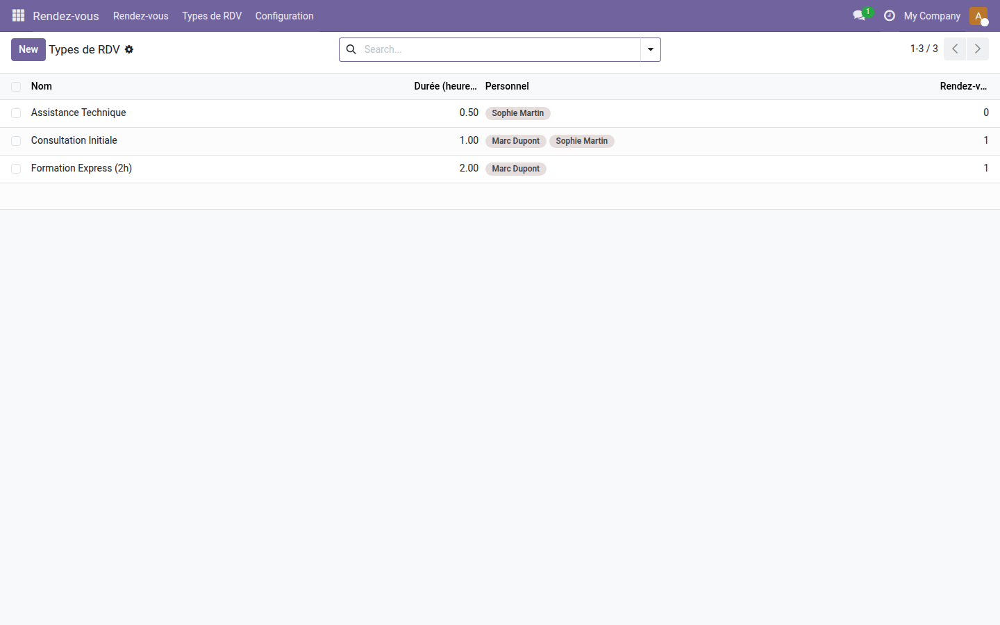
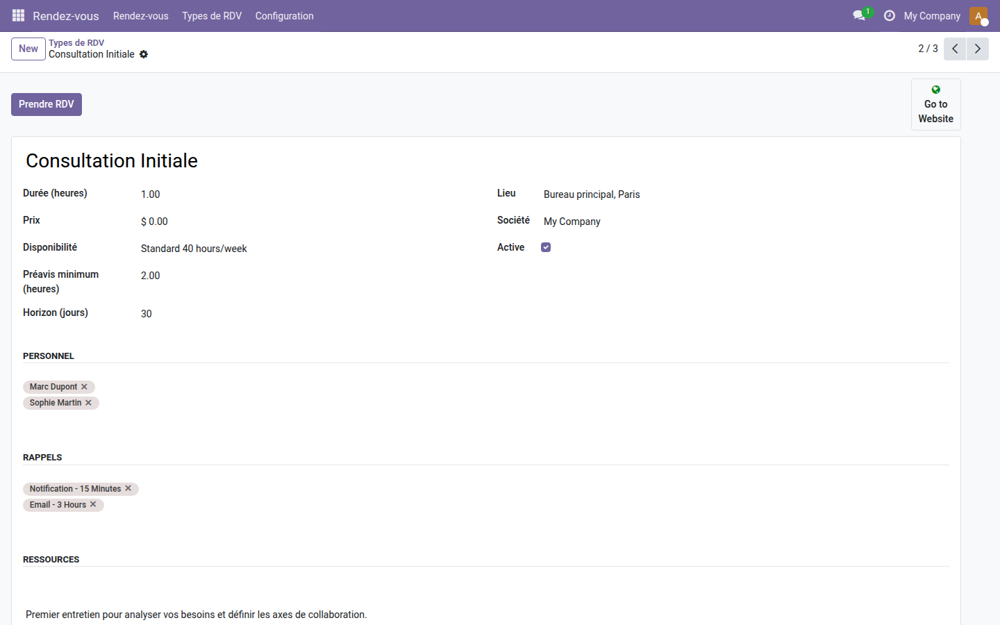
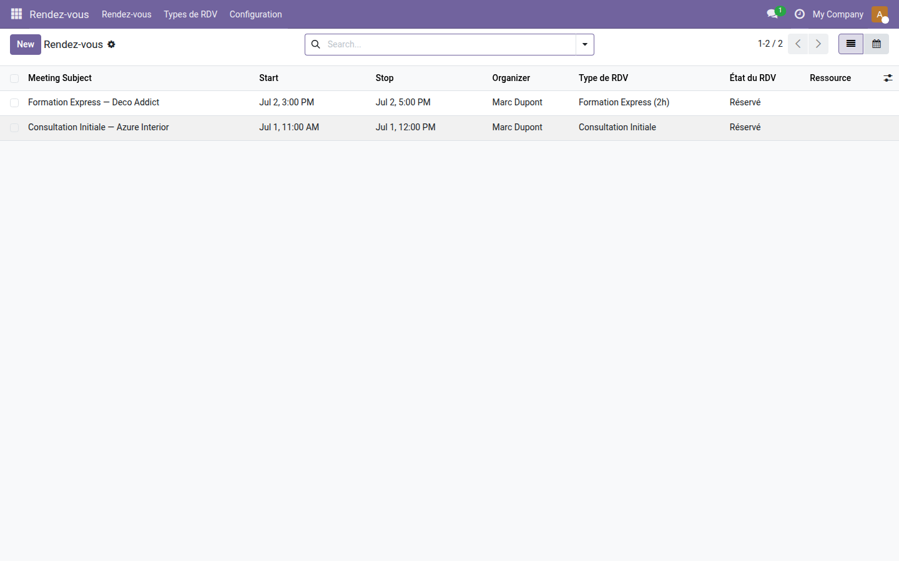

Rendez-vous — Prise de RDV interne
Gérez vos types de rendez-vous, calculez les créneaux libres et réservez en quelques clics — sans quitter Odoo Community.
Odoo Community n'embarque aucun module de prise de rendez-vous. Résultat : chaque consultation, séance ou intervention est saisie à la main dans le calendrier, sans vérification des disponibilités du personnel. Les doubles réservations arrivent, les confirmations par e-mail sont oubliées, et le suivi "Honoré / Absent / Annulé" n'existe tout simplement pas. Chaque équipe bricole sa propre solution dans un tableur ou un outil externe.
Ce que ça apporte
- 📋 Types de RDV configurables — définissez durée, personnel habilité, horaires (agenda de travail), préavis minimum et horizon de réservation pour chaque type de prestation.
- ⚡ Créneaux disponibles calculés automatiquement — le module croise l'agenda de travail et les événements existants pour ne proposer que les créneaux réellement libres, par membre du personnel.
- 🖱️ Réservation en un clic depuis la fiche — un wizard intégré permet de sélectionner le client, le créneau et le collaborateur, puis de confirmer le RDV sans quitter Odoo.
- 📊 Suivi des états du rendez-vous — chaque événement porte un statut (Réservé, Honoré, Annulé, Absent) pour piloter votre activité et filtrer les agendas.
- ✉️ E-mail de confirmation automatique — un modèle d'e-mail est envoyé au client et au collaborateur à chaque nouvelle réservation.
- 🗓️ Intégration native au calendrier Odoo — chaque RDV devient un événement calendrier standard, visible dans l'agenda, avec rappels configurables.
Aperçus réels
1. Catalogue de types de RDV — une offre lisible en un coup d'œil
La liste affiche chaque type de prestation avec sa durée, le personnel habilité et le nombre de RDV déjà planifiés.

2. Fiche de configuration — tout en une seule fiche
Durée, lieu, agenda de disponibilité, préavis minimum, horizon de réservation, personnel habilité et rappels e-mail/notification — chaque paramètre est configurable sans code.

3. Suivi des rendez-vous — état et filtrage intégrés
Chaque RDV confirmé apparaît dans la liste avec son état (Réservé, Honoré, Annulé…), l'organisateur, le type et les dates — filtrable et exportable comme tout objet Odoo.

Pourquoi l'adopter
- Fonctionnalité de prise de rendez-vous structurée, réservée à Odoo Enterprise, disponible en Community — gratuitement.
- Aucune dépendance externe : tout reste dans votre Odoo existant (contacts, calendrier, e-mails).
- Base extensible : ajoutez la réservation publique en ligne, les paiements à la réservation ou la gestion de ressources (salles, équipements) avec les add-ons pro de la suite.
- Convient à tout type d'équipe : cabinets de conseil, centres de services, ressources humaines, maintenance — dès lors qu'un collaborateur reçoit des clients sur créneau.
Fait partie de la suite Appointment OdooSkills
Ce module est le cœur gratuit. Complétez-le selon vos besoins :
- oski_appointment_website — page de réservation publique sur votre site Odoo (vos clients réservent seuls, 24h/24).
- oski_appointment_payment — encaissement en ligne à la réservation (acompte ou paiement complet).
- oski_appointment_resource — gestion de ressources physiques (salles, cabines, équipements) avec capacité et planning.
Voir la suite complète sur apps.odooskills.com.
Licence LGPL-3 (gratuit) — compatible Odoo 19.0 Community. Support : apps@odooskills.com.